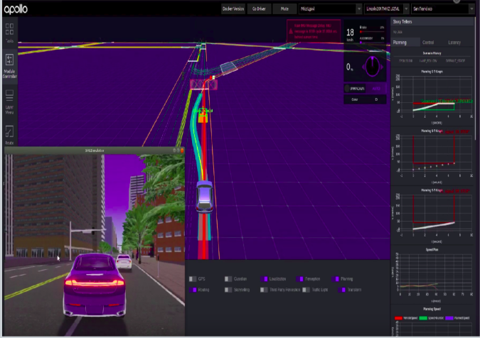
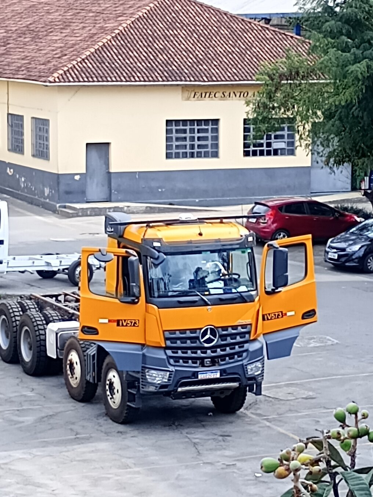
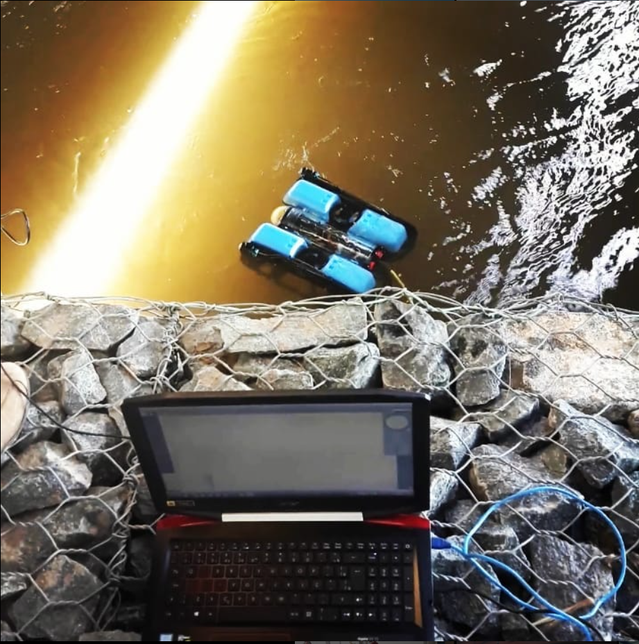

My Projects Meus Projetos

CARISSMA
CARISSMA (2019-2020)
- Participation in the ADAS and Radar disciplinesParticipação na disciplina ADAS e Radar
- Use of the Navigation Stack, configurations and results obtainedUso do Navigation Stack, configurações e resultados obtidos
- Support, Learning in the laboratorySuporte, Aprendizado no laboratório
- Germany experience summary (video) Resumo da experiência na Alemanha (vídeo)
.jpeg)
AUDI Internship (2nd half of 2020):Estágio AUDI (2º semestre 2020):
- Reading and analysis of radar dataLeitura e análise de dados de radar
- Study of vehicle regulations in different countriesEstudo de regulação veicular em diferentes países
- Applied tools and methodologiesFerramentas e metodologias aplicadas

Master's: Autoware and Apollo.Auto (2021)Mestrado: Autoware e Apollo.Auto (2021)
- Simulations in Carla + Control environmentsSimulações em ambientes Carla + Control
- Configuration of Autoware.Universe and Apollo.AutoConfiguração de Autoware.Universe e Apollo.Auto
- Performance evaluation and test casesAvaliação de performance e casos de teste

Mercedes-Benz Autonomous Truck Project – USP (2022-2024)Projeto Caminhão Autônomo Mercedes-Benz – USP (2022-2024)
- Simulation, deployment, and testing on a real vehicleSimulação, embarque e testes em veículo real
- Implementation of Navigation Stack 2 (Nav2)Implantação de Navigation Stack 2 (Nav2)
- Fusion of inertial sensors (odometry, GPS, IMU)Fusão de sensores inerciais (odometria, GPS, IMU)
- Detection with YOLO, localization with Robot Localization + NavsatDetecção com YOLO, localização com Robot Localization + Navsat
- Trajectory planning (global + local)Planejamento de trajetória (global + local)
- Development of a ROS 2 'control driver' for gain, torque, and PWM adjustmentDesenvolvimento de “driver de controle” ROS 2 para ajuste de ganho, torque e PWM
- Kinematic and dynamic modeling in ROS 2Modelamento cinemático e dinâmico no ROS 2
- Installation and development of drivers for IMU, radar, 3D Lidar, 2D Lidar, and camerasInstalação e desenvolvimento de drivers para IMU, radar, Lidar 3D, Lidar 2D e câmeras
.jpeg)
PhD in progress (2025):Doutorado em andamento (2025):
- Research in decision-making and Behavior TreesPesquisa em tomada de decisão e Behavior Tree
- Trajectory optimization and smoothingOtimização e suavização de trajetórias
- Publication goals and upcoming experimentsMetas de publicação e próximos experimentos

SENAI Embedded SystemsSENAI Embarcados
- Development of ROS 2 Control plugins in Gazebo FortressDesenvolvimento de plugins ROS 2 Control no Gazebo Fortress
- System modeling for Robot drift and spin avoidance during operationModelagem do sistema para evitamento de drift e spin durante operação do robô
- Results already achieved and lessons learnedResultados já alcançados e lições aprendidas

Side projects and collaborationsProjetos paralelos e colaborações
- Participation in the USP F1Tenth/ROBORACE teamParticipação no time USP F1Tenth/ROBORACE
- Research seminars on mobility and AVs at USPSeminários de pesquisa em mobilidade e AVs na USP
- Collaboration with the Apollo TeamColaboração com o Time Apollo

PublicationsPublicações
- A Performance Evaluation of Open Source Autonomous Driving Frameworks: Case Studies of Apollo and Autoware
- Autonomous Navigation and Collision Avoidance for Mobile Robots: Classification and Review
- Deep Learning-Based Instance Segmentation for Enhanced Navigation of Agricultural Vehicles
- Integrating NAV2 framework into Arocs Agricultural Truck (In Progress)

Early Career: AUVs & Underwater Robotics Início da carreira: AUVs & Robótica Subaquática
- Work with AUVs (Autonomous Underwater Vehicles) and underwater robots — foundations that sparked my passion for robotics. Atuação com AUVs (Veículos Subaquáticos Autônomos) e robôs subaquáticos — bases que despertaram minha paixão por robótica.
- Short demo (video) Pequeno demo (vídeo)
- Ocean pre-deployment test (short) Pré-teste de deploy no oceano (short)